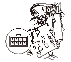
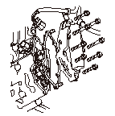
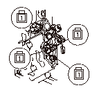
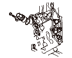
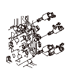

シフト コントロールSOL.V.の点検
HDSをデータ リンク カプラ（A）に接続する。
HDSの各種テスト メニューから各シフト ソレノイドを選択する。HDSがPGM-FI ECUと通信できない場合は、
データ リンク回路の点検を行う。
シフト コントロールSOL.V.のファンクション テストを行い、シフト コントロールSOL.V.の作動音を確認する。
すべてのシフト コントロールSOL.V.の作動音が確認できた場合は点検を終了する。作動音が確認できない場合は、ステップ
5
へ進み、シフト ソレノイド ハーネス カプラで点検する。
パーキング ブレーキをかけて後輪に車輪止めをする。前輪をジャッキ アップしてリジッド ラックで支える。または、車両をリフト アップする。
スプラッシュ シールドを取外す。
シフト ソレノイド ハーネス カプラの接続を外す。
シフト ソレノイド ハーネス カプラのSOL.V.の各端子とボディ アース間の抵抗値を測定する。
No.1端子:シフト コントロールSOL.V.C
No.2端子:シフト コントロールSOL.V.B
No.5端子:シフト コントロールSOL.V.A
No.8端子:シフト コントロールSOL.V.D
標準値:
12－25Ω
抵抗値が標準値から外れている場合は、ステップ
12
へ進み、シフト コントロールSOL.V.単体の点検を行う。
シフト ソレノイド ハーネス カプラのSOL.V.の各端子にバッテリのプラス端子を接続し、マイナス端子をボディ アースに接続したときにSOL.V.の作動音（カチ音）があることを確認する。
SOL.V.の作動音がある場合は、点検を終了する。作動音のしない場合は、シフト コントロールSOL.V.単体の点検を行う。

ドレン ボルト（A）を取外してATFを抜く。
シーリング ワッシャ（B）を新品に交換して、ドレン ボルトを取付ける。
ソレノイド カバー（A）、パッキン（B）、ノック ピン（C）を取外す。

シフト コントロールSOL.V.A、SOL.V.B、SOL.V.C、SOL.V.Dからカプラの接続を外す。
各SOL.V.のカプラ端子とボディ アース間の抵抗値を測定する。
標準値:
12－25Ω
抵抗値が標準値から外れている場合は、シフト コントロールSOL.V.を交換する。
各SOL.V.のカプラ端子にバッテリのプラス端子を接続し、マイナス端子をボディ アースに接続したときにSOL.V.の作動音（カチ音）があることを確認する。
•
SOL.V.の作動音がない場合は、ステップ21へ進み、シフト コントロールSOL.V.を交換する。
•
シフト コントロールSOL.V.に異常がない場合は、ステップ
19
へ進み、シフト ソレノイド ハーネスを交換する。

取付けボルトを取外してシフト ソレノイド ハーネス カプラ（A）を取外し、シフト ソレノイド ハーネスを交換する。
カプラに新品のOリング（B）を取付けてハーネスをトランスミッション ケースに通し、カプラを取付ける。ボルトを取付けてステップ
25
へ進む。

シフト コントロールSOL.V.A、SOL.V.B、SOL.V.C、SOL.V.Dを取外す。
交換するSOL.V.を新品に交換し、再使用するSOL.V.に新品のOリング（E）を取付ける。
新品のSOL.V.には新品のOリングが取付けてある。
シフト コントロールSOL.V.C、SOL.V.D、SOL.V.Bは、SOL.V.のボルト取付けステイがサーボ ボディの取付け面に突き当たるまで確実に押込んで取付ける。
SOL.V.Aは、ボルト取付けステイがSOL.V.Bのステイに重なるまでSOL.V.Aを押込んで取付ける。
•
SOL.V.AとSOL.V.Bは、取付けボルトを共用している。順序を間違えて取付けないこと。取付け順序を間違えた場合、油圧制御システムの異常の原因になる。
•
SOL.V.を取付けるときは、SOL.V.本体を持って取付けること。カプラを持って取付けないこと。
•
トランスミッションの中にごみなどを入れないように注意して取付けること。
シフト コントロールSOL.V.BにATF温度センサの付いているハーネス カプラ（橙、白、白コード）を接続する。
シフト コントロールSOL.V.Aにハーネス カプラ（青コード）を接続する。
シフト コントロールSOL.V.Cにハーネス カプラ（緑コード）を接続する。
シフト コントロールSOL.V.Dにハーネス カプラ（黄コード）を接続する。
ソレノイド カバーに、ノック ピン（2本）と新品のパッキンを取付け、ソレノイド カバーをトランスミッション ケースに取付ける。
カプラ内に錆、ごみ、油などがないことを確認し、シフト ソレノイド ハーネス カプラを確実に接続する。
ATFを規定量注入する。
スプラッシュ シールドを取付ける。



 新品のSOL.V.には新品のOリングが取付けてある。
新品のSOL.V.には新品のOリングが取付けてある。